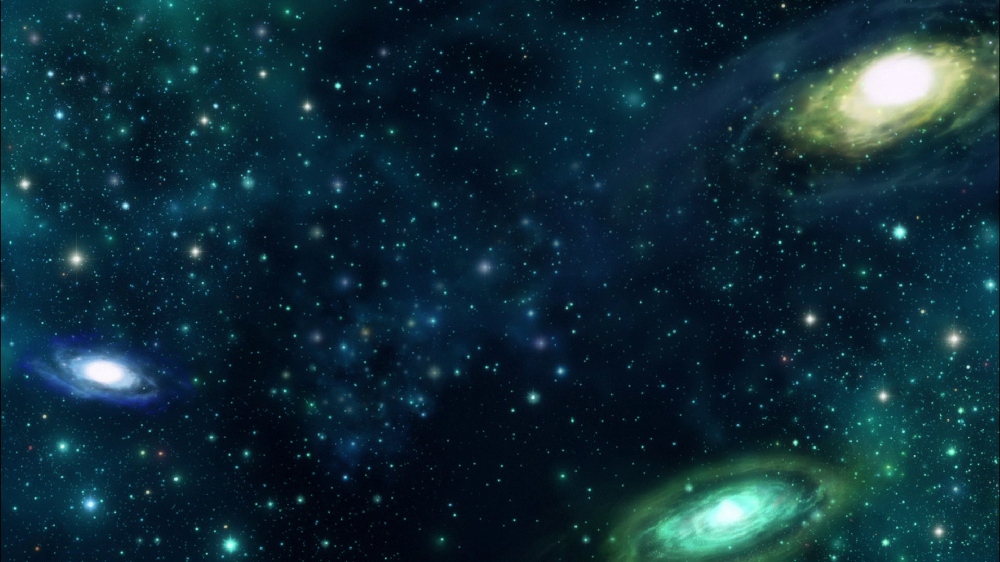
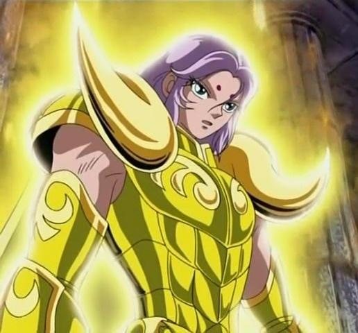
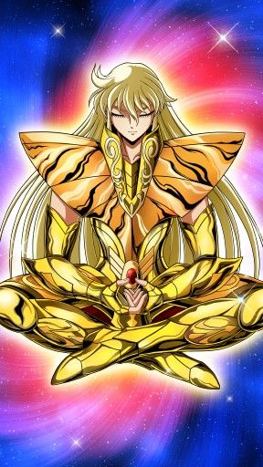

As antigas guerras santas

Desde o início dos tempos, os deuses travavam
intensas batalhas em disputa do universo. É dito
que quando o mal ameaça novamente a Terra,
Atena, a deusa da
bravura e da sabedoria,
surge para defender os oprimidos. Desde os
tempos antigos, nobres cavaleiros lutam pela
verdade e pela justiça, ao lado da deusa Atena.
Esses guerreiros lendários são chamados
de... Cavaleiros do Zodíaco
Os cavaleiros mais poderosos

Os Cavaleiros de Ouro são os 12
guerreiros mais poderosos do exército da
deusa Atena, invencíveis desde eras mitológicas.
Mu de Áries

Cavaleiro de Ouro que protege a Casa de Áries.
Hábil na restauração de armaduras, é ele quem
conserta as Armaduras de Bronze de Seiya e dos
outros antes da batalha das Doze Casas do Zodíaco.
Extinção Estelar
O golpe supremo do cavaleiro de Áries. Como o próprio nome já diz, este ataque é tão poderoso que é capaz até mesmo de destruir estrelas, e sobrepuljar o mais forte de seus imigos. Muitos de seus oponentes subestimam Mu por sua personalidade calma e racional, até verem esse golpe.
Shaka de Virgem

Cavaleiro de Ouro que protege a Casa de Virgem no
Santuário. Considerado como a reencarnação de
Buda, possui um poder de observação que permite
conhecer a verdade escondida sob as aparências.
O poder de ir e vir no tempo e espaço impressiona
até outros Cavaleiros de Ouro.
Tesouro do Céu
A técnica mais poderosa de Shaka. Capaz de privar seu oponente de todos os seus 5 sentidos, além de deixá-lo sob total controle de Shaka, e também sob um coma permanente, restando nada mais que seus pensamentos. É considerado também a punição divina de Buda.